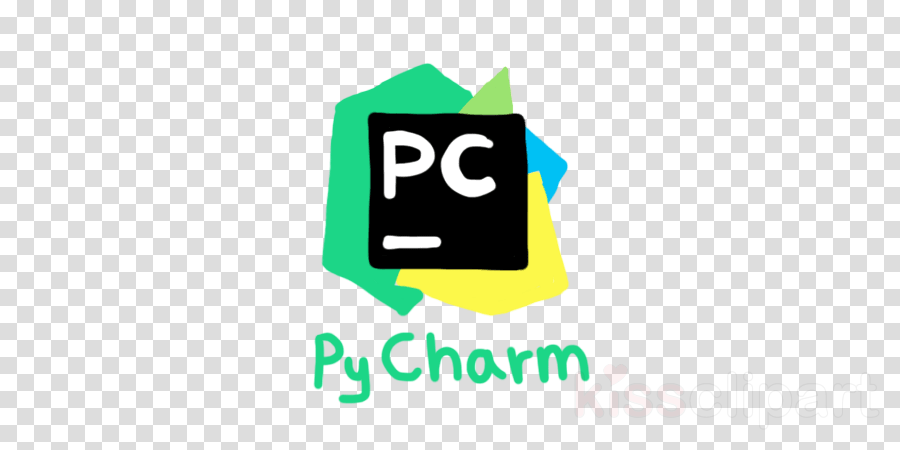

A Wonderful Website
Home
Alex Hartman
Allen Hellums
Jared Ngai
JK Wallace
Landon Lipscomb
Parker Prudhome
Contact Me
Sentiment Analysis Using Python
Don't actually have the time to code that so here is a turtle
Download Python
download Pycharm Pro for free with tamu login

The Man, The Myth, The Legend
Go see the world.
Based
Landon Lipscomb
Senior, Technology Management
Born and raised in College Station, I am currently a TA for TCMG 272 and have a huge passion for Technology.
Nerd above all else.